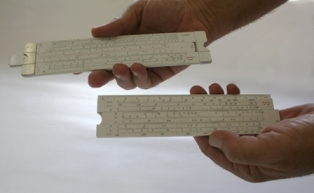
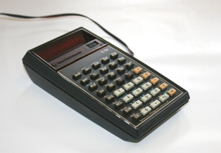

Esta obra esta protegida bajo una licencia de creative commons
Universidad de Antioquia
2010
En este capítulo, más que hacer una recopilación histórica de la evolución del computador, de lo cual existe una gran cantidad de información almacenada en red, prefiero contar un poco algunas anécdotas sobre lo que he conocido del computador y enmarcarlo en la evolución histórica de este fascinante aparato.
Cuando estaba naciendo, a finales de la década del 50 del siglo XX, ya se habían lanzado al espacio 3 de los satélites Sputnik de la antigua Unión Soviética; se había inventado ya la válvula electrónica de vació por John Ambrose Fleming en 1904, se habían ya construido los primeros computadores: el Colossus liderado por el matemático inglés Alan Turing en 1943 y utilizado para encriptar mensajes en la segunda guerra mundial (video BBC 1)1. En el año 1944 se había construido en la Universidad de Harvard la MARK I, diseñada por un equipo encabezada por el Dr. Howard Aiken. La ENIAC, considerada como la primera computadora electrónica, se había terminado de construir en 1946 para aplicación de cálculos balísticos. Los trabajos del padre de las computadoras, el matemático JOHNN VON NEUMANN, ya se materializaban en la que se llamó EDVAC (Electronic Discrete Variable Automatic Computer).
De todo esto me vine a enterar mucho después, y aún cuando en los primeros años de escuela usábamos el ábaco para contar y jugar, sólo en la universidad supe que ese juguete era uno de los precursores de las computadoras y de la que se conocían modelos de la civilización Babilónica en el año 700 A.C. y en la civilización Egipcia y en la China mucho antes.
En la década del 60 estaba realizando los primeros años de estudio y recuerdo haber conocido las primeras calculadoras mecánicas en el banco donde mi padre trabajaba. Después me enteré de que la Pascalino, inventada por el matemático francés Blaise Pascal hacia el año 1642, era su predecesora, junto con otras máquinas como la inventada por el filósofo y matemático alemán Gottfried Wilhelm Leibniz en 1670, o la máquina de censado de personas inventada por el estadounidense Herman Hollerith en 1880. Otros inventores como el francés Joseph Marie Jacquard y el matemático británico Charles Babbage también aportaron al diseño de estas primeras calculadoras mecánicas. En el banco también existían máquinas de escribir mecánicas y los archivadores de cajones, pues aún no existía el almacenamiento en medios magnéticos y todavía estaban vigentes los discos de acetato que se reproducían en un tocadiscos de aguja.
| En el año de 1975 conocí la primera calculadora manual electrónica que sólo realizaba las operaciones matemáticas básicas y la regla de cálculo IBM (en inglés es slide rule) la cual era la herramienta de cálculo de los ingenieros y que había sido inventada por William Oughtred y el matemático escocés John Napier desde el siglo XVII. Por esta época, en otras latitudes, el transistor y los circuitos integrados ya eran una realidad y la computadora IBM 360 se había lanzado desde en abril de 1964. |  (GALEANO, 2011c) Reglas de cálculo |
En la Universidad Nacional de Colombia, sede de Medellín, vi por primera vez una computadora; era la IBM 1130, la cual fue construida desde 1965 (http://ibm1130.org/ ), pero para 1977 era la computadora principal en la Universidad, donde realizábamos las prácticas programando en FORTRAN y usábamos tarjetas perforadas para su programación. Por esa época era la única computadora entre las instituciones de educación superior en Medellín. Sin embargo, ya en 1964 el término "computadora personal" había aparecido en la revista New Scientist en una serie de artículos llamados «El mundo en 1984» y ARPANET, predecesora de Internet, en 1977 ya tenía bastantes computadores interconectados en Estados Unidos.
| En la universidad nos toco inaugurar la época de las calculadoras electrónica; en el año de ingreso en 1975, ya se había realizado una reforma curricular y los cursos donde se enseñaba el uso de la regla de cálculo se habían eliminado. Nuestra primera calculadora programable la compraron nuestros padres en San Andrés en 1977 y era marca Texas Instrument de referencia TI-55, la disfrutamos mucho y aún la conservamos. |  (GALEANO, 2011d) Calculadora programable ti-55 |
La era de las computadoras personales la inauguramos en 1981 cuando un familiar de un compañero de la universidad adquirió una Radio Shack TRS-80 la cual tenía en su fábrica de textiles y estuvimos trabajando los sábados para ver qué aplicaciones se podrían realizar. Este computador personal disponía de Basic para su programación y la unidad de almacenamiento magnético era una grabadora de casetes de audio. Estos computadores habían salido desde 1980, y aunque no tenía capacidad económica para comprarme uno en esos momentos, ya soñaba con tener mi propio computador personal.
En 1982, trabajando en Empresas Publicas de Medellín, aún no disponíamos de computadores personales en la oficina. La empresa disponía de un computador central en el Edificio Miguel de Aguinaga y para realizar trabajos en él, teníamos que acceder por pantallas terminales desde alguna de las salas. El uso del computador aún no era muy generalizado en las empresas.
Estando trabajando en mantenimiento en una empresa fabricante de empaques flexibles (Shellmar de Colombia S. A.); se adquirió en 1987 unos micro-computadores (no recuerdo cual era su marca y su referencia) los cuales utilizábamos con un programa denominado Simphony (similar a las hojas de cálculo) y un procesador de texto, Word Perfect, para realizar informes de gestión. En 1989 se instalo en una máquina extrusora un control de temperatura digital, era el primer control por computador que tenía la oportunidad de conocer y trabajar directamente.
Por fin, en 1990 pude comprar mi primer computador personal. No era de marca, era de los denominados clon, pues se ensamblaban aquí a partir de tarjetas genéricas. Disponía de un microprocesador 80286 de Intel con coprocesador matemático 8087, memoria RAM de 128 K y un disco duro de 40 MB. Su pantalla era monocromática naranjada, con tarjeta Hércules y la impresora era una Epson de puntos. Se usaba el sistema operativo DOS de Microsoft y lo trabajábamos con hojas de cálculo como Lotus, procesador de texto y lenguajes de programación como Fortran y Pascal. Su costo fue de 880.000 pesos colombianos y lo adquirí con un préstamo en la cooperativa de profesores de la Universidad de Antioquia (COOPRUDEA). Este mismo computador me sirvió para conectarme a Internet en 1993 a través del servidor Instru del grupo de instrumentación de física liderado por el profesor Mario Trujillo. Desde 1991 la conexión de Colombia a Internet la lideraba la Universidad de los Andes y se presentaba como una herramienta para unir a los académicos del mundo, más que una herramienta de tipo comercial, como es en la actualidad.
En la última década del siglo XX nos tocó ver el posicionamiento del Windows de Microsoft, imitando el sistema operativo de los computadores Mchintosh, la rápida evolución de los interfaces gráficos y los programas para facilitar la comunicación de los computadores, la masificación de los computadores personales y la aparición de los portátiles.
Esta primera década del siglo XXI nos ha traído la masificación de la fotografía digital y el video digital, dando paso a la creación del sitio Youtube en el año 2005 y Facebook que es la primera red social creada en el año 2004. Se abre un nuevo mundo de omnipresencia de la red y la digitalización de toda la información. Ahora los portátiles ya evolucionan a las tablets y los teléfonos celulares acceden fácilmente a la información de la red.
Esta temática de la historia del computador puede ampliarse tanto como quiere en todos los sitios de Internet disponibles, entre ellos:
La Wikipedia en inglés y en español cuenta con una amplia información sobre la historia de los computadores u ordenadores:
Este sitio dispone de 4 capítulos sobre la historia del computador:
Documento en español sobre historia de los computadores:
Del instituto de ingeniería eléctrica y electrónica (IEEE):
Anales de la historia de los computadores de la IEEE:
El canal youtube de historia del computador:
Una breve historia de los computadores:
1. Un completo documental de la BBC de Londres en 9 partes, este link es la primera parte:
Youtube. BBC documentary history of computers part 1 [en línea]. http://www.youtube.com/watch?v=NbhbssXWDAE&feature=related [citado en 2011]
Esta obra esta protegida bajo una licencia de creative commons
Universidad de Antioquia
2010